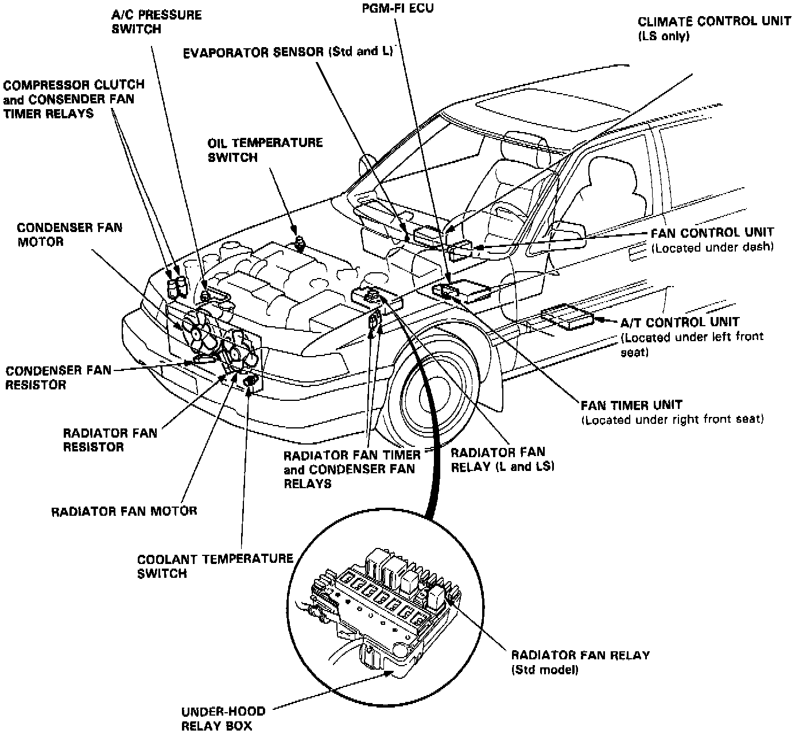
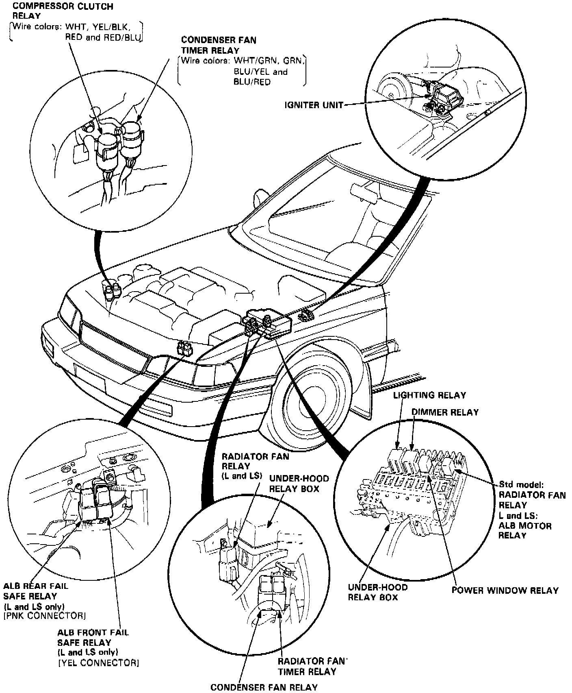
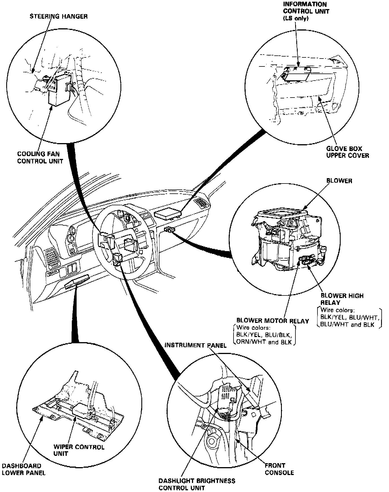
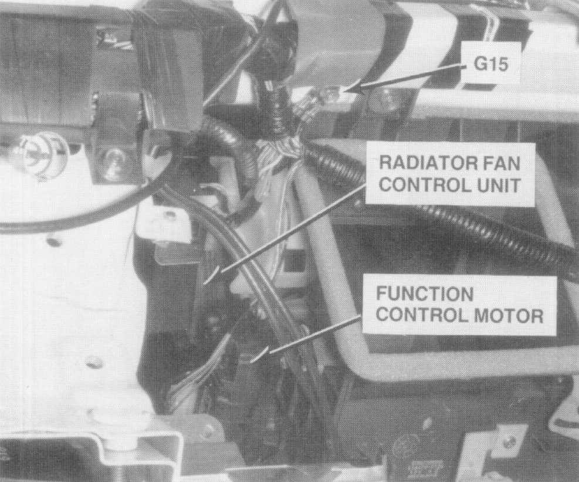
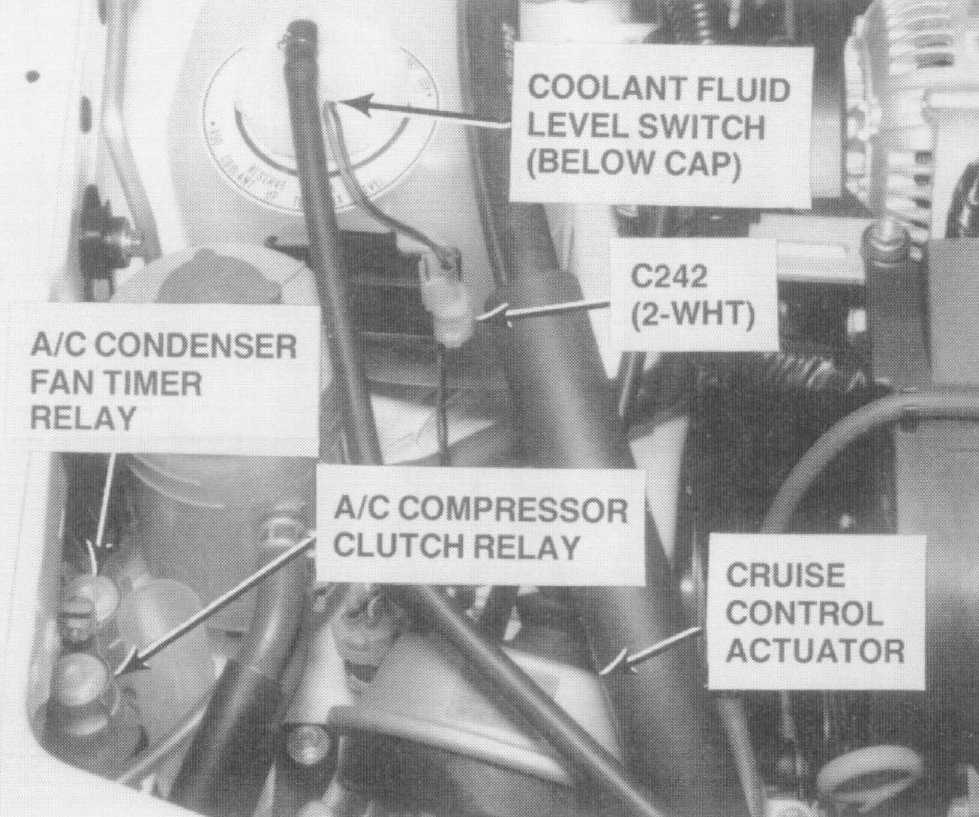
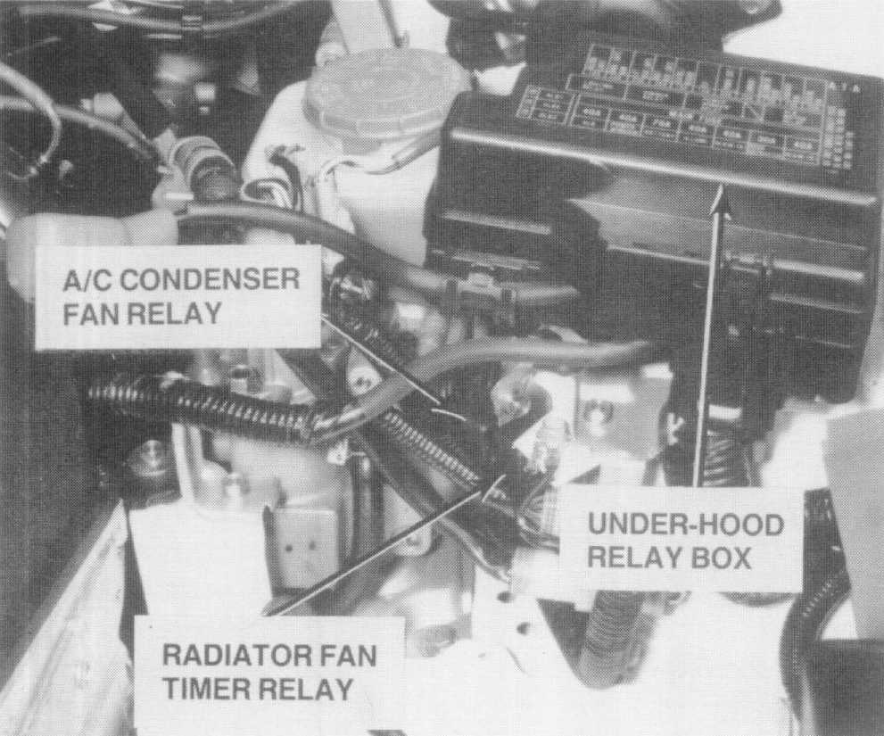

Sedan
Sedan:

Heating and Air Conditioning System Components
Sedan - Compressor Clutch Relay:

Engine Compartment Relays
Relays and Control Units - Dashboard:

Passenger Compartment Relays

Radiator Fan Control Unit
(Behind Center of Dash, Dash Removed)

A/C Condenser Fan Timer Relay/ Compressor Clutch Relay
(Right Front of Engine Compartment)

Radiator Fan Timer Relay/ Air Conditioning Condenser Fan Relay
(Front of Engine Compartment, Battery Removed)
Fan Timer Unit
Located under right front seat.
Note: For a picture of the location of this component and the system it is apart of please refer to Heating and Air Conditioning System Components.